|
poet
unspecified
Evolve orbits under tides
|


|
|
poet
unspecified
Evolve orbits under tides
|
|
The implementation of the evolution of inclined/eccentric orbits is based on the formalism of Lai 2012, hence we will use the same notation.
The first thing is to derive the spherical harmonic expansion of the tidal potential.
![\[ U(\mathbf{r}, t) = \frac{GM'}{r(t)}\left( 1-\frac{r(t)}{\left|\mathbf{r}_{M'}\right|}\right) \]](form_119.png)
where 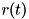 is the distance between the centers of 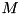 and and 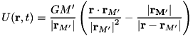 is the distance between and the point 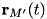 where the potential is being evaluated. Obviously for a circular orbit is a constant.
We start with the expansion in a coordinate system with 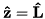, and .
Let us define this expansion as:
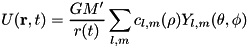
With 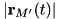 in spherical coordinates.
Clearly:
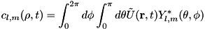
where .
The integrals are calulated the easiest by writing both 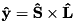 and 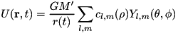 in a coondinate system where 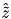 points from to . Tilde will be used to identify coordinates in that system.
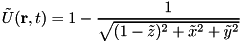
where , and 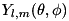 are the coordinates of the point the potential is being evaluated scaled by :
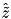
with 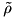 also scaled by .
With these we have:
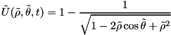
As expected there is no 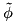 dependence.
Now we need to write in the tilde coordinate system:
![\begin{eqnarray*} x_{rot} &=& \tilde{z}\\ y_{rot} &=& \tilde{y}\\ z_{rot} &=& -\tilde{x}\\ \rho=\rho_{rot} &=& \tilde{\rho}\\ \theta = \theta_{rot} &\Rightarrow& \sin\theta = \sqrt{ \sin^2\tilde{\theta}\sin^2\tilde{\phi} + \cos^2\tilde{\theta}},\quad \cos\theta = -\sin\tilde{\theta}\cos\tilde{\phi}\\ \phi&=&\phi_{rot}-\Delta\phi(t)\\ \sin\phi_{rot}&=& \frac{\sin\tilde{\theta}\sin\tilde{\phi}} { \sqrt{\sin^2\tilde{\theta}\sin^2\tilde{\phi} + \cos^2\tilde{\theta}} }\\ \cos\phi_{rot}&=& \frac{\cos\tilde{\theta}} { \sqrt{\sin^2\tilde{\theta}\sin^2\tilde{\phi} + \cos^2\tilde{\theta}} } \end{eqnarray*}](form_143.png)
Where coordinates with "rot" subscript are in a coordinate system where 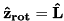 and 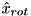 points from the center of to the center of , and 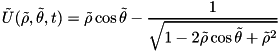 is the angle between and 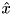 ( 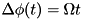 for a circular orbit with angular velocity 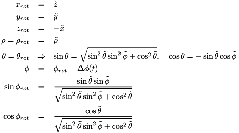).
Note that:
![\begin{eqnarray*} c_{l,m}(\rho, t) &=& \int_{\Delta\phi(t)}^{2\pi+\Delta\phi(t)} d\phi_{rot} \int_{0}^{\pi} d\theta \tilde{U}(\mathbf{r}, t) Y_{l,m}^*(\theta,\phi_{rot}-\Delta\phi(t))\\ &=& exp(-im\Delta\phi(t))\int_{\Delta\phi(t)}^{2\pi+\Delta\phi(t)} d\phi_{rot} \int_{0}^{\pi} d\theta \tilde{U}(\mathbf{r}, t) Y_{l,m}^*(\theta, \phi_{rot})\\ &=& \exp(-im\Delta\phi(t))\left\{ \int_{\Delta\phi(t)}^{2\pi} d\phi_{rot} \int_{0}^{\pi} d\theta \tilde{U}(\mathbf{r}, t) Y_{l,m}^*(\theta, \phi_{rot}) + \int_{2\pi}^{2\pi+\Delta\phi(t)} d\phi_{rot} \int_{0}^{\pi} d\theta \tilde{U}(\mathbf{r}, t) Y_{l,m}^*(\theta, \phi_{rot})\right\}\\ &=& \exp(-im\Delta\phi(t))\left\{ \int_{\Delta\phi(t)}^{2\pi} d\phi_{rot} \int_{0}^{\pi} d\theta \tilde{U}(\mathbf{r}, t) Y_{l,m}^*(\theta, \phi_{rot}) + \int_{0}^{\Delta\phi(t)} d\phi_{rot} \int_{0}^{\pi} d\theta \tilde{U}(\mathbf{r}, t) Y_{l,m}^*(\theta, \phi_{rot}+2\pi)\right\}\\ &=& \exp(-im\Delta\phi(t)) \int_{0}^{2\pi} d\phi_{rot} \int_{0}^{\pi} d\theta \tilde{U}(\mathbf{r}, t) Y_{l,m}^*(\theta, \phi_{rot}) \end{eqnarray*}](form_150.png)
We can then use Mathematica to evaluate:
The 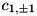 coefficients represent the gravitational acceleration of the center of mass of due to , and are the lowest order tidal potential terms, so we have reproduced eq. (4) of Lai 2012.
Now we need to transform the  functions to a coordinate system where the 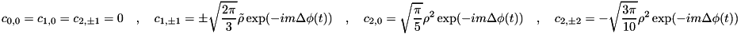 axis is along 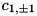 and the
functions to a coordinate system where the 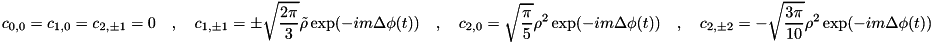 axis is along 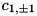 and the  axis is along 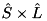. We will use primes for the coordinates in the new system. We have the following relations:
axis is along 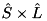. We will use primes for the coordinates in the new system. We have the following relations:
![\begin{eqnarray*} y&=&y'=\rho'\sin\theta'\sin\phi'\\ z&=&x'\sin\Theta + z'\cos\Theta =\rho'\sin\theta'\cos\phi'\sin\Theta + \rho'\cos\theta'\cos\Theta\\ x&=&x'\cos\Theta - z'\sin\Theta =\rho'\sin\theta'\cos\phi'\cos\Theta - \rho'\cos\theta'\sin\Theta\\ \rho&=&\rho'\\ \cos\theta&=&z/\rho=\sin\theta'\cos\phi'\sin\Theta+\cos\theta'\cos\Theta\\ \exp(i\phi)&=&\frac{x+iy}{\rho\sin\theta} =\frac{\sin\theta'\sin\phi'+i\left(\sin\theta'\cos\phi'\cos\Theta - \cos\theta'\sin\Theta\right)} {\sqrt{1-\cos^2\theta}} \end{eqnarray*}](form_160.png)
Then using mathematica we show that the transformation between the prime and non-prime coordinate system is indeed given by the Wigner D matrices quoted in Lai 2012 (Equations 6-11).
The equivalent of Lai 2014 eq. 12 is then:
with
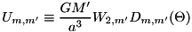
This is where we diverge from Lai 2012 because we wish to consider elliptical orbits. For general elliptical orbits it is convenient to define the origin of time so that the planet is at periastron at  . Further we will take 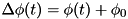 where , which implies that 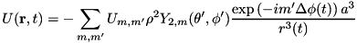 is the angle between periastron and or less than the angle between periastron and . With these definitions:
. Further we will take 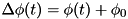 where , which implies that 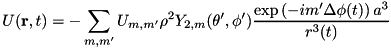 is the angle between periastron and or less than the angle between periastron and . With these definitions:

Where is the eccentric anomaly:
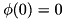
Differentiating:
Since the orbital solution and 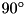 is periodic with a period of 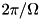, we can expand:
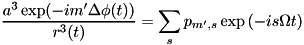
Expressions for the 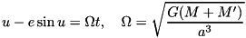 coefficients are derived here or here.
Hence, our tidal potential can be written exactly as in Lai (2012), eq. 12, except with 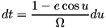 not limited to only 0 and 2:
with
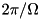
where we have switched the and 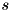 coefficients. Here is a table of .
From here we proceed following Lai (2012) again, but we have more than 6 independent timelags if the orbit is eccentric (for circular orbits, 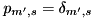).
The ansatz:
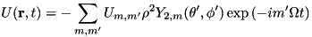
with 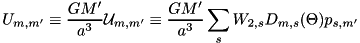, 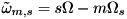, where is the spin angular velocity of , and 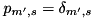 is the dynamical frequency of .
Here are the detailed devirations of the tidal torque and power.
As noted before, for general eccentric orbits, the number of timelags is not only six, like in Lai (2012), but could be arbitrarily large, depending on the precision required of the expansion and the value of the eccentricity. In order to preserve full generality, we allow the user to specify each tidal lag and each love coefficient 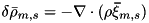 separately.
The variables evolved will be the usual orbital elements (the semimajor axis - 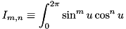 and eccentricity  ), and for each zone we will use the inclination relative to the orbit - 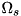. Finally, one zone will be designated as a reference and for all other zones, we will follow the evolution of the difference between their argument of periapsis and that of the referenc zone - 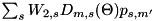. Thus, if the two bodies are split into n zones, the evolution of 1+2n variables will be followed. The equations for the evolution of these variables are derived here.
), and for each zone we will use the inclination relative to the orbit - 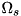. Finally, one zone will be designated as a reference and for all other zones, we will follow the evolution of the difference between their argument of periapsis and that of the referenc zone - 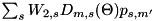. Thus, if the two bodies are split into n zones, the evolution of 1+2n variables will be followed. The equations for the evolution of these variables are derived here.
The collected equations are:
![\begin{eqnarray*} \dot{a}&=&a\frac{-\dot{E}}{E}\\ \dot{e}&=&\frac{2(\dot{E}L+2E\dot{L})L(M+M')}{G(MM')^3}\\ \dot{\theta} &=& \frac{(T_z+\tilde{T}_z)\sin\theta}{L} - \frac{(T_x+\tilde{T}_x)\cos\theta}{L} - \frac{T_x+\mathscr{T}_x}{S}\\ \dot{\omega} &=& \frac{(T_y+\tilde{T}_y)\cos\theta}{L\sin\theta} + \frac{T_y+\mathscr{T}_y}{S\sin\theta}\\ \bhat{\tilde{x}}&=& \left(\sin\theta\sin\tilde{\theta} + \cos\theta\cos\tilde{\theta}\cos\Delta\omega \right)\bhat{x} + \cos\tilde{\theta}\sin\Delta\omega\bhat{y} + \left(\cos\theta\sin\tilde{\theta} - \sin\theta\cos\tilde{\theta}\cos\Delta\omega \right)\bhat{z}\\ \bhat{\tilde{y}}&=& -\cos\theta\sin\Delta\omega\bhat{x} + \cos\Delta\omega\bhat{y} + \sin\theta\sin\Delta\omega\bhat{z}\\ \bhat{\tilde{z}}&=& \left(\sin\theta\cos\tilde{\theta} - \cos\theta\sin\tilde{\theta}\cos\Delta\omega \right)\bhat{x} - \sin\tilde{\theta}\sin\Delta\omega\bhat{y} + \left(\cos\theta\cos\tilde{\theta} + \sin\theta\sin\tilde{\theta}\cos\Delta\omega \right)\bhat{z} \end{eqnarray*}](form_191.png)
If the system ever gets in a state where the forcing frequency 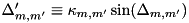 for some (m,m') combination from the expansion of the potential (see above), and the corresponding is discontinuous at zero, it is possible that locks between the spin of some zones of the bodies and the orbit will be established. In that case, for each locked zone, let us split the tidal dissipation torque and power into components , 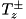 and 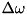 with the (+) terms assuming that the spin frequency is just above the lock and the (-) terms assuming it is just below. Further, let , and be the tidal torques and power due to all other zones. We can imagine taking an infinitesimally small timestep, during which the not-locked components will contribute as usual, but over a fraction ( ) the timestep the (+) locked components contribute and over the remaining fraction ( ) the (-) locked components contribute.
In order to maintain the lock, we must have for each locked zone (denoted by index i):
![\begin{eqnarray*} &&m'\frac{\partial}{\partial t}\sqrt{\frac{G(M+M')}{a^3}}= m\frac{\partial}{\partial t}\frac{S_i}{I_i}\\ \Rightarrow && -\frac{3m'}{2}\sqrt{\frac{G(M+M')}{a^5}}\dot{a}= m\frac{\dot{S}_i}{I_i} - m\frac{S_i\dot{I}_i}{I_i^2}\\ \Rightarrow && -\frac{3 m S_i}{2 I_i}\frac{\dot{a}}{a} = m\frac{\dot{S}_i}{I_i} - m\frac{S_i\dot{I}_i}{I_i^2}\\ \Rightarrow && -\frac{3}{2}\frac{\dot{a}}{a}= \frac{\dot{S}_i}{S_i} - \frac{\dot{I}_i}{I}\\ \Rightarrow && -\frac{3}{2}\frac{\dot{E}^0 + \sum_k\left[\lambda_k\dot{E}_k^+ + (1-\lambda_k)\dot{E}_k^-\right]}{E} = \frac{\dot{I_i}}{I_i} - \frac{\dot{S}_i^0 + \lambda_i\dot{S}_i^+ + (1-\lambda_i)\dot{S}_i^-}{S_i}\\ \Rightarrow && \lambda_i\left(\frac{\dot{S}_i^+ - \dot{S}_i^-}{S_i}\right) -\sum_k \lambda_k \left(1.5\frac{\dot{E}_k^+ - \dot{E}_k^-}{E} \right) =\frac{\dot{I_i}}{I_i} - \frac{\dot{S}_i^0 + \dot{S}_i^-}{S_i} +\frac{3}{2}\frac{\dot{E}^0+\sum_k\dot{E}_k^-}{E} \end{eqnarray*}](form_202.png)
And the lock is maintained as long as .
The resulting evolution equations are then the same as before, but with:
 1.8.11
1.8.11